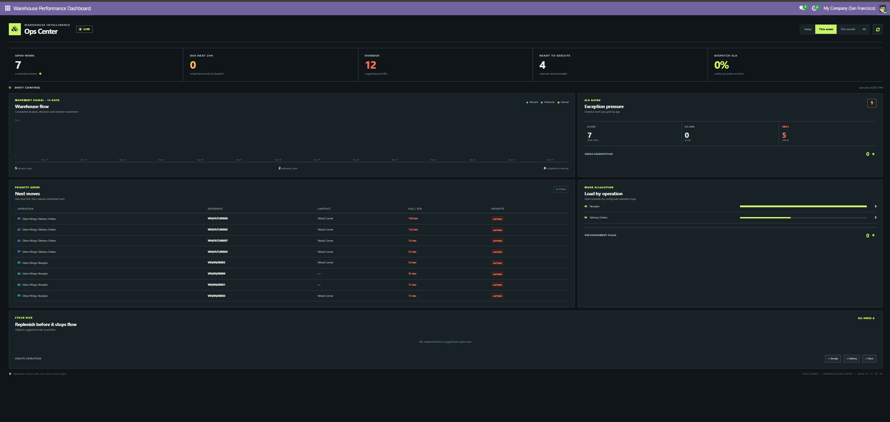
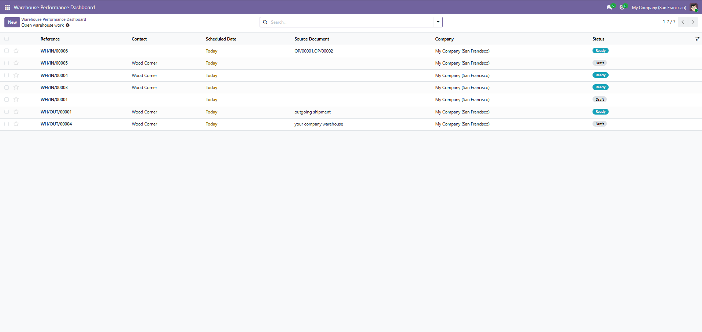
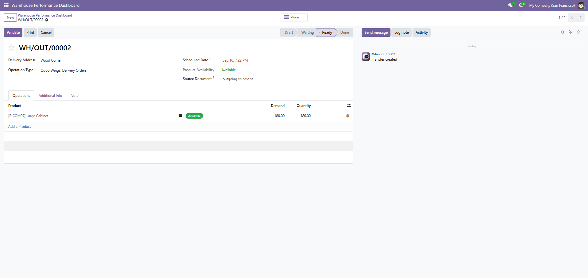

The dashboard reads your existing stock transfers, operation types and replenishment rules. Clickable indicators open the relevant Odoo records so supervisors can move from a signal to the work behind it without searching manually.
|
Shift control
Open work, due in 24 hours, overdue transfers, ready operations and outbound dispatch SLA.
|
Exception pressure
Age late work in 0–24, 24–48 and 48+ hour bands; track reservations and optional active picking batches.
|
Stock and flow
Review 14-day receipts, deliveries and internal movements, workload by operation type, and top replenishment suggestions.
|
Dashboard, transfer list and transfer form using standard Odoo Inventory records.



| Actionable KPI strip Open, due, overdue, ready and on-time dispatch indicators open their matching transfer views. |
Fourteen-day movement signal Compare completed incoming, outgoing and internal transfers across a rolling two-week window. |
| Prioritized transfer queue See scheduled work with overdue operations first, then the nearest upcoming transfer; open a row to process it. |
Workload and replenishment Compare open work by operation type and review the highest suggested order quantities from reordering rules. |
| Flexible time windows Switch between today, this week, this month and all operations; refresh manually or let the dashboard refresh every minute. |
Quick operation creation Start a receipt, delivery or internal transfer from the dashboard using the configured operation type. |
| Odoo version Compatible module build: Odoo 19.0. |
Dependency stock (Odoo Inventory). |
Publisher Odoo Wings · Warehouse Ops Center. |